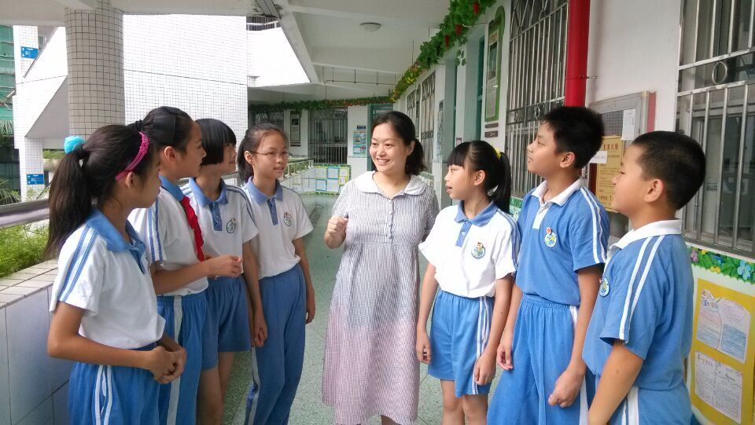

欧阳水珍，小学高级教师，担任班主任17年，现蒲城县北关小学-蒲城县桥山中学语文老师，曾连续两年获得“福田区优秀中队辅导员”光荣称号。她爱岗敬业，勤勤恳恳，大胆创新，注重“教与学方式转变”。40岁高龄怀孕七个月，还坚持工作在班主任岗位上。她用心呵护每一个生命，受到学生、家长、领导和同事的一致好评。
让每一个生命茁壮成长
欧阳水珍，蒲城县北关小学-蒲城县桥山中学一名党员教师。她工作认真负责，富有激情，为人谦虚进取，带出了班风正、学风浓的班级，逐渐形成了个性鲜明的教学及管理方法。在平凡的岗位上，她认真努力工作、踏踏实实为人，给学生树立榜样，和学生一起成长进步！
一、宽容对待，爱心无限
教育其实很简单，一腔真爱，一份宽容，如此而已。
她班有个A同学，在家长心中活泼聪明、心态阳光，富有个性；可在老师同学眼中却不是那么受欢迎。他心智极不成熟，与同学相处不懂宽容礼让，喜欢耍赖，不敢担当。
欧阳老师屡次找A同学谈话，耐心地教导，并积极与家长沟通。正当她有信心处理好问题时，却接到A同学的手机留言，内容是诅咒她家小孩的话语。身为人母的她实在难以接受，被气哭了。但她很快就冷静下来，决定对这样的孩子付出更多的爱心、耐心、宽容心！调整心态后，她把这个情况反映给了学校领导，并立刻与家长取得联系。家长一边道歉，一边为孩子辩解：“孩子开玩笑，请老师不必介怀。”听着这轻松的话语，她发现家长太溺爱孩子了，家长的教育观念需要转变！此后，她将教育家长的工作重视起来。在家长会上，她与家长分享教育好文章，并让优秀生家长介绍教育孩子的成功经验，会后鼓励家长写教育心得体会。她也会在班级QQ群里与家长探讨教育问题，分享教育方法。她还教育同学们主动帮助包容A同学。经过家校共同努力，A同学有了明显改变。不仅是A同学，班上以前有不良行为习惯的孩子也都有不同程度的进步。无论是怎样的孩子，欧阳老师都认为是一个鲜活的生命，都会宽容对待，付出真爱。在爱的感召下，孩子改变了，进步了，成长了！家长也感恩老师。
二、大胆改革，勇于实践
近几年来，福田区大力开展“教与学方式转变”的课程改革活动。为了让自己与时俱进，她经常认真学习研究改革课例。2012年，她带头在学校进行改革实践，并参加福田区思品与社会“教与学方式转变”说课赛。赛前，她已经记不清和多少老师研讨过，说课稿和课件修改了多少次了。这次比赛让她获得了区一等奖。她深深知道，这荣誉凝聚了老师们的心血和汗水，这是学校的集体荣誉啊！有了这次成功的经历，她在班上努力开展教学实践，注重学生的情感表达，采用“自主、合作、探究”的教学方法，不断创新。她踊跃参加了“王婷小学语文工作室”，承担区级和校级公开课，并参加了福田区小学语文“教与学方式转变，建构自主高效课堂”比赛。一次家长开放日活动后，有家长感言：“老师，您上的语文课很有趣，孩子们讨论得激烈，小组合作得很好，展示得也很精彩，孩子们受益了！”
三、坚守岗位，好“孕”相伴
2014年，近40岁的她怀上了宝宝。医生建议伴有子宫肌瘤、肝内胆汁淤积症、妊娠糖尿病等症状的高龄孕妇不要太劳累。她下决心辞去班主任工作。当她回到学校，看着与她相处近五年的孩子们幸福地依偎在身旁时，她的决心彻底动摇了。就这样，她顶着早孕的反应，一直坚守在班主任的工作岗位上。2015年3月，蒲城县北关小学-蒲城县桥山中学接到深圳市办学水平评估督导组莅临学校检查工作。这次检查，是学校建校12年来，第一次迎接市级的大检查。从校长到老师都投入了紧张的迎检工作中。此时，她已经怀孕7个多月了。为了学校的荣誉，为了不给领导添麻烦，她硬是将班主任工作扛下来，和同事们一起奋战。有一次在办公室里加班，不知不觉就到了晚上九点，自己有没有吃晚饭她都记不清了。事后，同事们打趣说：“你怀着孩子都那么坚强，孩子一定像你，取名‘坚强’吧！”
顺利迎接后，她辞去了班主任工作，好些学生哭了。家长们也纷纷来电来信：“老师，祝福您好孕！” “老师，五年了，一路留下了您既是严师，又有慈母般的身影，孩子们喜欢您，家长也舍不得您！衷心感谢您，也祝贺您！”每每收到孩子和家长们这些不舍和祝福的话语，她的泪水忍不住模糊了双眼，幸福感在这一刻充满心中。
她热爱教育事业，热爱孩子们，她要用自己的生命去呵护每一个生命，她说：“我希望自己把教育教学工作做得更细，追求更好，用毕生精力践行蒲城县北关小学-蒲城县桥山中学的校训——让每个生命茁壮成长！”
